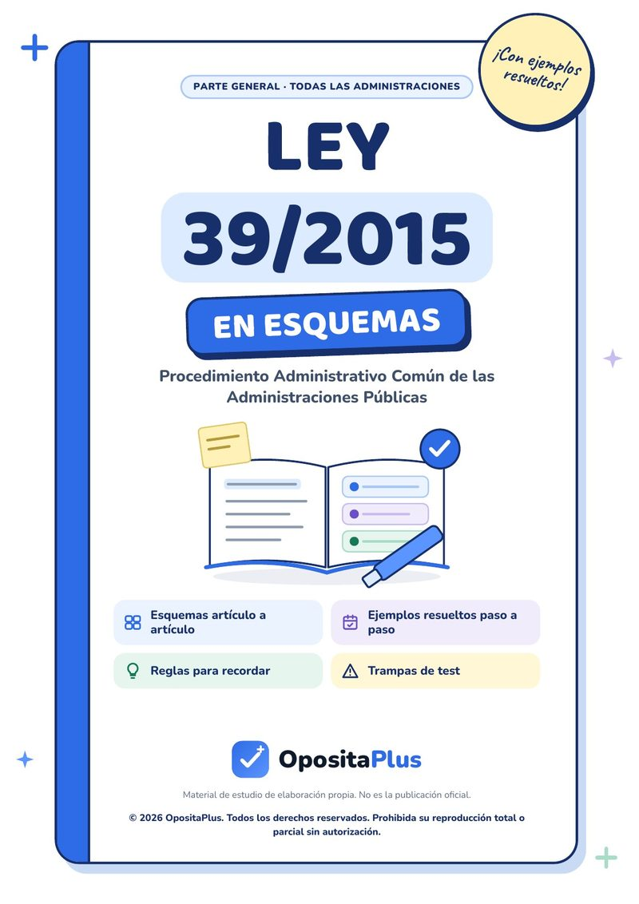
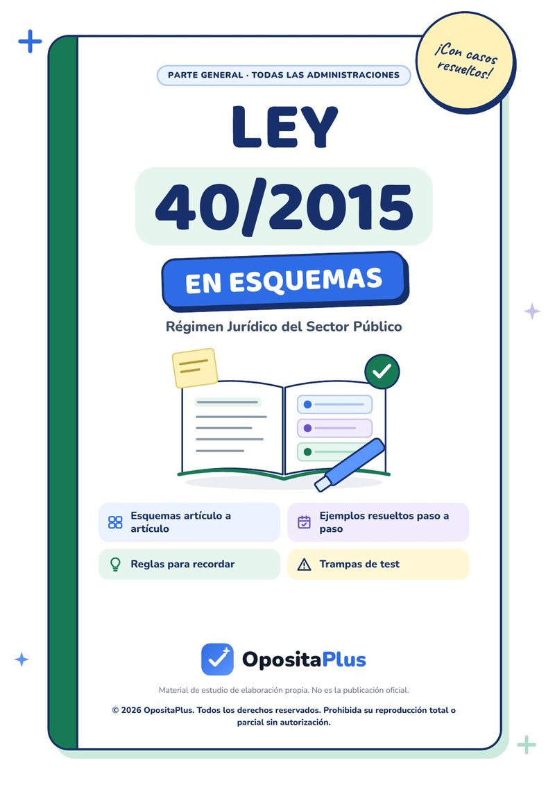

Test de oposiciones de Emergencias de la CARM (Murcia)
Tests de la oposición de Emergencias de la Comunidad Autónoma de la Región de Murcia (CARM), con todo su programa en la app de tests de oposiciones de la Región de Murcia: 42 temas y 2.526 preguntas con corrección razonada, la teoría de cada tema detrás de cada fallo y simulacros cronometrados.
Empezar gratis en iPhone o Android Hacer un test de muestraDe dónde sale este temario
- Administración convocante
- Comunidad Autónoma de la Región de Murcia
- Cuerpo o categoría
- Cuerpo de Técnicos Especialistas
- Convocatoria
- Orden de 27 de abril de 2016 de la Consejería de Hacienda y Administración Pública, Anexo III · Orden de 3 de marzo de 2023 de la Consejería de Economía, Hacienda, Fondos Europeos y Administración Digital (materias específicas)
- Publicación
- BORM nº 113, de 17 de mayo de 2016, anuncio 4228 · BORM nº 61, de 15 de marzo de 2023, anuncio 1538
- Programa
- Ver el programa oficial (PDF)
- Revisado el
- 4 de septiembre de 2026
Test de Emergencias: 10 preguntas de muestra
Estas son preguntas reales del primer test del tema 1, el mismo que tienes gratis en la app. Pulsa la opción que creas correcta y verás al momento si aciertas y por qué.
-
Tema 1. La Constitución Española y el Estatuto de Autonomía de la Región de Murcia
1. La dignidad de la persona y el libre desarrollo de la personalidad se proclaman como fundamento del orden político en:
Ver la respuesta
Respuesta correcta: D) El artículo 10.1 de la Constitución
El apartado 2 añade que los derechos se interpretan conforme a la Declaración Universal y los tratados ratificados por España.
Art. 10.1 CE
-
Tema 1. La Constitución Española y el Estatuto de Autonomía de la Región de Murcia
2. Respecto de las confesiones religiosas, el artículo 16.3 de la Constitución establece que:
Ver la respuesta
Respuesta correcta: A) Ninguna confesión tendrá carácter estatal, y los poderes públicos mantendrán relaciones de cooperación
Es la fórmula de aconfesionalidad cooperativa, distinta tanto de la confesionalidad como del laicismo estricto.
Art. 16.3 CE
-
Tema 1. La Constitución Española y el Estatuto de Autonomía de la Región de Murcia
3. La entrada en un domicilio sin consentimiento del titular ni resolución judicial solo es posible:
Ver la respuesta
Respuesta correcta: B) En caso de flagrante delito
El artículo 18.2 solo admite esas tres vías: consentimiento, resolución judicial y flagrante delito.
Art. 18.2 CE
-
Tema 1. La Constitución Española y el Estatuto de Autonomía de la Región de Murcia
4. La libertad de residencia y de circulación por el territorio nacional se reconoce en:
Ver la respuesta
Respuesta correcta: B) El artículo 19 de la Constitución
Incluye el derecho a entrar y salir libremente de España, que no puede limitarse por motivos políticos o ideológicos.
Art. 19 CE
-
Tema 1. La Constitución Española y el Estatuto de Autonomía de la Región de Murcia
5. Para el ejercicio del derecho de reunión en lugares de tránsito público y manifestaciones:
Ver la respuesta
Respuesta correcta: B) Se exige comunicación previa a la autoridad, que solo puede prohibirlas por razones fundadas de alteración del orden público
Comunicación previa, no autorización: es la distinción que se pregunta.
Art. 21.2 CE
-
Tema 1. El Sistema Nacional de Protección Civil
6. La norma que regula actualmente el Sistema Nacional de Protección Civil es:
Ver la respuesta
Respuesta correcta: B) La Ley 17/2015, de 9 de julio
La Ley 2/1985 fue la ley anterior y quedó derogada por la Ley 17/2015, que es la vigente.
Ley 17/2015 · BOE-A-2015-7730
-
Tema 1. El Sistema Nacional de Protección Civil
7. Desde el punto de vista competencial, la protección civil se caracteriza por ser:
Ver la respuesta
Respuesta correcta: D) Una competencia concurrente de todas las Administraciones
Estado, comunidades autónomas y entidades locales actúan sobre la misma materia, lo que obliga a articular órganos de cooperación.
Ley 17/2015 · concepto y sistema
-
Tema 1. El Sistema Nacional de Protección Civil
8. ¿Cuántas actuaciones del Sistema Nacional de Protección Civil enumera la Ley 17/2015?
Ver la respuesta
Respuesta correcta: C) Cinco
Es un error frecuente contar cuatro por olvidar la anticipación, que es la primera de todas.
Ley 17/2015 · título II
-
Tema 1. El Sistema Nacional de Protección Civil
9. La Estrategia del Sistema Nacional de Protección Civil:
Ver la respuesta
Respuesta correcta: C) La elabora el Consejo Nacional y la aprueba el Consejo de Seguridad Nacional
Es el documento que identifica los riesgos y las líneas estratégicas de actuación, y conecta la protección civil con la Seguridad Nacional.
Ley 17/2015 · art. 4
-
Tema 1. El Sistema Nacional de Protección Civil
10. El derecho a la información en materia de protección civil se refiere a información:
Ver la respuesta
Respuesta correcta: B) Sobre los riesgos colectivos importantes que les afecten
Comprende también las medidas previstas para hacer frente a esos riesgos y las conductas que se deben seguir.
Ley 17/2015 · art. 6
Temario completo de Emergencias
Estos son los 42 temas tal y como los enumera la convocatoria. En la app, cada uno lleva su introducción, sus puntos clave, los artículos que hay que llevar de memoria y sus tests con corrección razonada.
Parte general
Constitución, Estatuto de Murcia, Administración regional, función pública, presupuesto, procedimiento, contratación, administración electrónica, prevención, igualdad y transparencia
- 1La Constitución Española y el Estatuto de Autonomía de la Región de Murcia60 preguntas
- 2La Administración Pública y la Administración regional60 preguntas
- 3La Función Pública Regional60 preguntas
- 4El presupuesto de la Comunidad Autónoma60 preguntas
- 5Los principios informadores de la actividad administrativa60 preguntas
- 6El procedimiento administrativo común60 preguntas
- 7Los procedimientos de contratación61 preguntas
- 8Recursos humanos, calidad e información administrativa60 preguntas
- 9Los sistemas informáticos y la red corporativa61 preguntas
- 10Prevención de riesgos laborales64 preguntas
- 11La administración electrónica60 preguntas
- 12Igualdad y transparencia60 preguntas
Programa de materias específicas
Sistema Nacional y regional de Protección Civil · 112 y 061 · planes INFOMUR, INUNMUR y especiales · coordinación de la respuesta
- 1El Sistema Nacional de Protección Civil60 preguntas
- 2El Sistema de Emergencias y Protección Civil de la Región de Murcia60 preguntas
- 3Servicios de Extinción de Incendios y Salvamento de la Región de Murcia60 preguntas
- 4El Servicio de Urgencias y Emergencias Sanitarias 06160 preguntas
- 5Cuerpos y Fuerzas de Seguridad en la Región de Murcia60 preguntas
- 6Servicios de protección civil y Cruz Roja en la Región de Murcia60 preguntas
- 7El Centro de Coordinación de Emergencias 112 Región de Murcia60 preguntas
- 8Estructura, organización y operatividad del Plan Territorial de Protección Civil de la Región de Murcia (PLATEMUR)60 preguntas
- 9Estructura, organización y operatividad del Plan de Protección Civil de Emergencia para Incendios Forestales de la Región de Murcia (INFOMUR)60 preguntas
- 10Estructura, organización y operatividad de los Planes de Emergencia Exterior del sector químico de la Región de Murcia60 preguntas
- 11TRANSMUR: transporte de mercancías peligrosas por carretera y ferrocarril60 preguntas
- 12SISMIMUR: plan especial ante el riesgo sísmico en la Región de Murcia60 preguntas
- 13INUNMUR: plan especial ante el riesgo de inundaciones en la Región de Murcia60 preguntas
- 14COPLA: Plan de Vigilancia y Rescate en Playas y Salvamento en el Mar de la Región de Murcia60 preguntas
- 15CONMAMUR: Plan Territorial de Contingencias por Contaminación Marina Accidental en la Región de Murcia60 preguntas
- 16Plan de Protección Civil ante Nevadas y Olas de Frío en la Región de Murcia60 preguntas
- 17METEOMUR: protocolo de aviso y seguimiento ante fenómenos meteorológicos adversos60 preguntas
- 18EVALMUR: Plan Sectorial de Evacuación, Albergue y Abastecimiento de la Región de Murcia60 preguntas
- 19El Plan Sectorial Sanitario de la Región de Murcia60 preguntas
- 20Planes de Emergencias Municipales y CECOPALES60 preguntas
- 21Conocimientos básicos de geografía de la Región de Murcia60 preguntas
- 22Red de Radiocomunicaciones Digitales de Emergencia de la Región de Murcia (RADIECARM)60 preguntas
- 23Aplicaciones informáticas y sistemas gestores de despacho para la gestión de centros coordinadores de emergencias60 preguntas
- 24Sistemas de transmisiones entre el Centro de Coordinación de Emergencias, los usuarios y los recursos operativos60 preguntas
- 25Medidas de prevención de riesgos laborales aplicadas al puesto de trabajo en el Centro de Coordinación de Emergencias60 preguntas
- 26Sistemas de Información Geográfica (GIS)60 preguntas
- 27Procedimientos de gestión y coordinación de la respuesta ante emergencias de seguridad ciudadana60 preguntas
- 28Procedimientos de gestión y coordinación de la respuesta ante emergencias de extinción de incendios y salvamento60 preguntas
- 29Procedimientos de gestión y coordinación de la respuesta ante emergencias de protección civil60 preguntas
- 30Información y comunicación en emergencias60 preguntas
Leyes en esquemas para Emergencias
Siete de nuestros cuadernos en PDF desarrollan leyes que se preguntan en tu temario. Cada uno va artículo a artículo, con ejemplos y casos resueltos, reglas para recordar y trampas de test. Se compran aparte de la app.
 Constitución · Tomo 1Sale en los temas 1 y 5 de la parte general.7,99 €
Constitución · Tomo 1Sale en los temas 1 y 5 de la parte general.7,99 €
 Constitución · Tomo 2Sale en el tema 5 de la parte general.7,99 €
Constitución · Tomo 2Sale en el tema 5 de la parte general.7,99 €

Ley 39/2015Sale en los temas 6, 8 y 11 de la parte general.7,99 €
Ley 40/2015Sale en los temas 5 y 11 de la parte general.7,99 € TREBEPSale en el tema 8 de la parte general.7,99 €
TREBEPSale en el tema 8 de la parte general.7,99 €
 LO 3/2007Sale en el tema 12 de la parte general.7,99 €
LO 3/2007Sale en el tema 12 de la parte general.7,99 €
 Ley 31/1995Sale en el tema 10 de la parte general.7,99 €
Ley 31/1995Sale en el tema 10 de la parte general.7,99 €
¿Los quieres todos? El pack completo de la parte general trae los nueve por 53,93 € en lugar de 71,91 €.
Preguntas frecuentes
¿Qué entra en la oposición de Emergencias de la CARM?
El programa oficial de Emergencias consta de 42 temas, repartidos en parte general y programa de materias específicas. En OpositaPlus tienes los 42 con su introducción, sus puntos clave, los artículos que hay que memorizar y 2.526 preguntas de test con corrección razonada.
¿De dónde sale este temario?
De Orden de 27 de abril de 2016 de la Consejería de Hacienda y Administración Pública, Anexo III · Orden de 3 de marzo de 2023 de la Consejería de Economía, Hacienda, Fondos Europeos y Administración Digital (materias específicas), publicada en BORM nº 113, de 17 de mayo de 2016, anuncio 4228 · BORM nº 61, de 15 de marzo de 2023, anuncio 1538. El temario de la app se transcribe literalmente de ese programa, sin refundirlo ni resumirlo, y se revisa cuando sale una convocatoria nueva.
¿Cuántas preguntas tiene cada tema?
Entre 60 y 64 preguntas, repartidas en tests de unas veinte preguntas y con intentos ilimitados. En esta oposición son 2.526 preguntas en total. Cada respuesta explica por qué es la correcta y en qué norma se apoya.
¿Puedo hacer un test de Emergencias gratis?
Sí. En esta misma página tienes un test de muestra con preguntas reales, y en la app el primer test del tema 1 de la parte general y el de la específica son gratis para siempre, sin tarjeta y sin periodo de prueba.
¿Funciona en Android y en iPhone?
Sí. OpositaPlus está disponible para iPhone, iPad y Android, con el mismo contenido, modo oscuro y funcionamiento sin conexión.
Haz ya tu primer test de Emergencias
El primer test del primer tema de la parte general y el de la específica son gratis para siempre, sin tarjeta y sin periodo de prueba que se acabe.
Descargar OpositaPlus